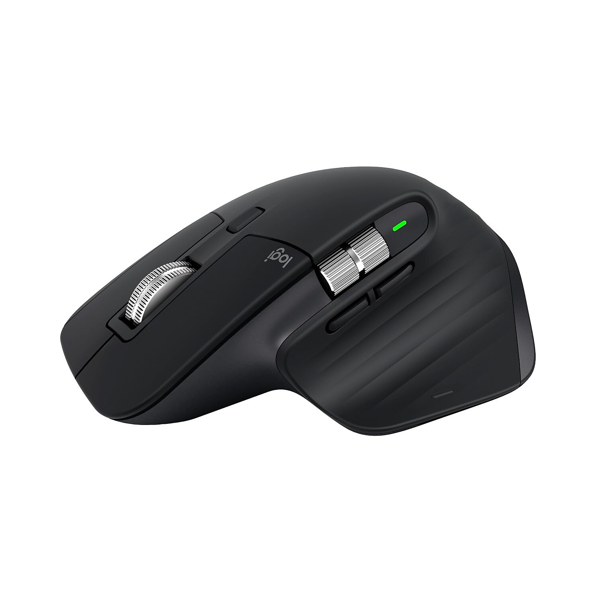
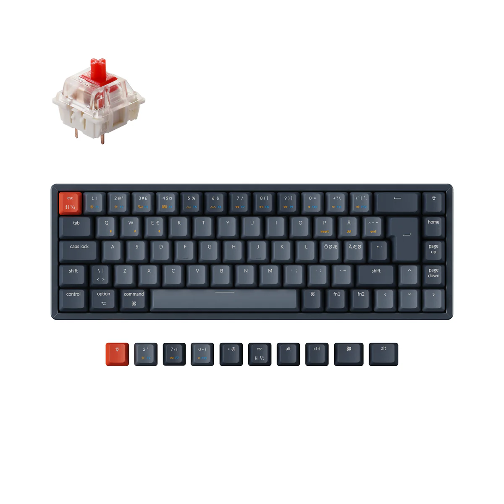
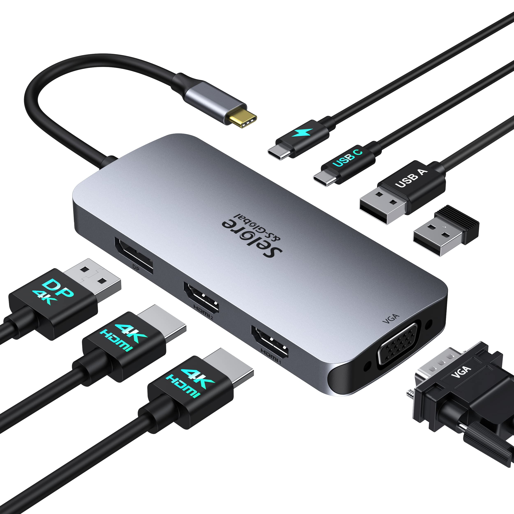

Top 4 Productivity Accessories Every Developer Should Own in 2025
Published on July 13, 2025

1. Logitech MX Master 3 Mouse
Ergonomic design, customizable buttons, and smooth scrolling make this mouse a productivity champion.

2. Keychron K6 Mechanical Keyboard
Compact, wireless, and hot-swappable. Ideal for coding sessions and desk minimalism.

4. Blue Light Filtering Glasses
Protect your eyes during late-night coding or prolonged screen time.

5. USB-C Docking Station
Expand your connectivity with HDMI, USB, and SD card slots in a sleek all-in-one hub.